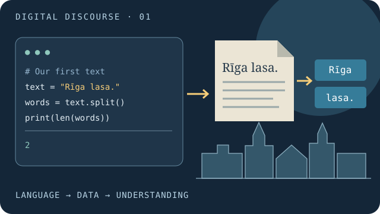

Input
Historical newspapers, multilingual texts, metadata and archives.
Technical week 01 · Version 1 · 25 November 2026
From Words to Code — your first steps in computational text analysis with Python.
90-minute core · beginner friendly · Digital Humanities

By the end of this lesson you should be able to explain values, names and types, predict basic Python output, manipulate text, read simple decisions and loops, diagnose introductory errors, and connect preprocessing to research results.
No prior programming experience is assumed. The existing introductory notebook is a larger collection of executable examples; use selected examples from this page in Colab. Week 2 covers notebook and library workflow in detail.
How to use the laboratories: the interactive controls model selected Python behaviours with JavaScript, not a Python interpreter. Run real Python in Colab. No sign-in, external runtime or student data collection is needed for these demonstrations.
01 · 5 minutes
Programming makes a procedure explicit enough for a computer to execute. An algorithm is a procedure; Python is a language for expressing it. Source code is the written instructions; the interpreter (and runtime) executes them. Output is what the computation produces, not automatically a valid answer to a research question.
Historical newspapers, multilingual texts, metadata and archives.
Read, normalize, filter, count or transform using explicit rules.
Inspect outputs, record choices and interpret patterns in context.
Python is readable, has a standard library and an extensive research ecosystem. It complements close reading; it does not replace it. The examples here are synthetic, not observations about real historical documents.
02 · 10 minutes
print() displays values. Quoted text is a string literal; 2 + 3 is an expression. A # outside a string introduces a comment. Python is case-sensitive, and indentation is significant. Statements normally execute in sequence unless control flow changes it.
# Our first Python program
print("Hello, Digital Humanities!")
print("Sveika, Rīga!")
print(2 + 3)Open the notebook in Colab, insert a code cell, paste the example and run it. The browser interface sends your code to a Python runtime; this webpage does not execute Python. In notebooks the final expression of a cell may also be displayed without print().
Browser laboratory · JavaScript simulation, not Python execution
print("Sveika, Rīga!")print(2 + 3)print("Digital Humanities")No output yet.
0 / 3 lines executed
03 · 15 minutes
A variable is a name bound to an object. Objects have types; names do not have permanently declared types in Python. Assignment (=) binds or rebinds a name, not necessarily copying an object. Use descriptive snake_case names; names are case-sensitive and cannot be reserved keywords.
| Type | Example | Research use |
|---|---|---|
| str | "Rīga" | Titles and documents |
| int | 2026 | Years and counts |
| float | 4.75 | Averages (binary approximation) |
| bool | True | Inclusion flags |
| NoneType | None | Missing or unknown value |
| list | ["Rīga", "Jelgava"] | Ordered collection |
| dict | {"year": 1937} | Metadata mapping |
title = "Digital Discourse"
year = 2026
average_length = 4.75
is_available = True
author = None
print(type(year))
year = "2026"
print(type(year))type() inspects the type of an object. None is not the same as an empty string, zero or False; missing data must not silently become a measurement.
Browser laboratory · JavaScript simulation, not Python execution
documentRebinding the name does not modify its previous object.
04 · 10 minutes
Operators have precedence: multiplication before addition; parentheses change grouping. / divides, // floors the quotient, % gives the corresponding remainder. ** is exponentiation. Strings concatenate with + when both operands are strings.
print(2 + 3 * 4)
print((2 + 3) * 4)
print(10 / 4, 10 // 4, 10 % 4)
print("2" + "3")
print(int("2") + int("3"))
print(int(4.75))Convert explicitly with int(), float(), str() or bool(). Conversions may lose information or raise exceptions. int(4.75) truncates toward zero, not rounds; bool("False") is true because the string is nonempty.
Browser laboratory · JavaScript simulation, not Python execution
Only these fixed examples are modelled; no arbitrary code is evaluated.
05 · 15 minutes
Python str represents a sequence of Unicode code points. Latvian letters such as ā, ē, ī, ū and ģ can occur directly in text. A visible character can consist of multiple code points (for example e followed by a combining accent); UTF-8 bytes are yet another unit. Indexing starts at zero; negative indices count from the end. Slices include the start and exclude the stop. Strings are immutable: methods return new values.
text = "Rīga"
print(len(text))
print(text[0], text[-1], text[:2])
print(text.upper())
print(text) # unchanged
print(f"City: {text}")Browser laboratory · JavaScript simulation, not Python execution
These sliders model step-one slices, including negative bounds; positions refer to code points, not grapheme clusters.
| Operation | Purpose |
|---|---|
| len(text) | Number of code points |
| text.lower() / upper() | Change case |
| text.strip() | Remove leading/trailing whitespace |
| text.split() | Split on runs of whitespace |
| text.count("Rīga") | Count non-overlapping, case-sensitive matches |
| text.replace("Rīga", "Jelgava") | Return a string with substitutions |
text = " Rīga ir skaista. Rīga lasa. "
print(text.lower())
print(text.strip())
print(text.split())
print(text.count("Rīga"))
print(text.replace("Rīga", "Jelgava"))Browser laboratory · JavaScript simulation, not Python execution
JavaScript approximates Python case conversion; Unicode database versions may differ. Whitespace splitting here uses Python's whitespace definition. This is not linguistic tokenization.
len("ē") is 1, whereas len("e\u0304") is 2. Both can look the same. Python's unicodedata.normalize("NFC", text) can make canonically equivalent sequences comparable. Do not remove diacritics unless the research question justifies it; preserve the original text.
06 · 10 minutes
Comparisons (==, !=, <, >, <=, >=) can produce Boolean results. With Boolean operands, and requires both to be true, or requires at least one, and not negates truth. if executes a body when a condition is truthy; elif checks another condition; else is the fallback. Colons and indentation matter.
year = 1937
language = "Latvian"
if year >= 1918 and language == "Latvian":
print("Include in corpus")
else:
print("Exclude from corpus")Browser laboratory · JavaScript simulation, not Python execution
Change the threshold or language. What documents would be excluded, and why? A synthetic rule is not a recommendation for a real historical corpus.
07 · 15 minutes
Lists are ordered and mutable; dictionaries map unique keys to values; tuples are immutable sequences (their elements can refer to mutable objects); sets represent distinct hashable elements and do not promise a useful iteration order. Use a collection appropriate to your analytical goal.
words = ["rīga", "lasīt", "rīga", "bibliotēka"]
record = {"year": 1937, "language": "Latvian"}
print(words[0], record["year"])
print(len(set(words)))A for loop obtains successive items from an iterable and executes its body for each. A while loop repeats while its condition is truthy; ensure it can terminate.
words = ["rīga", "lasīt", "rīga", "bibliotēka"]
for word in words:
print(word)Browser laboratory · JavaScript simulation, not Python execution
The outline highlights the next item to process; the binding and output show the last completed iteration.
word is not yet bound by this loop.
No output yet.
def defines a reusable function; a parameter names an input, an argument supplies a value, and return sends a result to the caller. Printing and returning are different operations. A function without an explicit return returns None.
def count_words(text):
words = text.split()
return len(words)
print(count_words("Rīga ir skaista"))import gives access to modules such as math, json and unicodedata. External packages offer additional tools. Week 2 explains notebook state, imports and reproducibility; Week 3 develops word counting.
08 · 10 minutes
Question: How do preprocessing choices influence the characteristics measured in a short synthetic text? Compare the original text, lowercasing and replacing punctuation with spaces. Record the rule you used, not just the result.
import unicodedata
text = "Rīga ir skaista. Rīga ir vēsturiska. Latvija ir skaista."
normalized = text.lower()
# Replace punctuation with spaces to avoid joining adjacent words.
normalized = "".join(" " if unicodedata.category(c).startswith("P") else c for c in normalized)
words = normalized.split()
print("Character count:", len(text))
print("Whitespace tokens:", len(words))
print("Unique tokens:", len(set(words)))Browser laboratory · JavaScript simulation, not Python execution
Normalized text:
Punctuation is replaced, not deleted, to avoid joining words. This simple method can still split hyphenated words or retain symbols and digits. JavaScript and Python Unicode database versions may differ.
Save source text, code, preprocessing choices and output together. The results are descriptive, not evidence of sentiment or linguistic meaning without further interpretation.
Reference · optional during class
Read the traceback from the final line upward: note the exception name and message, then identify the failing line. Syntax errors prevent the affected code from being compiled; runtime exceptions occur while executing valid syntax. Logical errors may produce plausible but incorrect results.
| Error | Example | Cause |
|---|---|---|
| SyntaxError | print("Hello" | Missing closing parenthesis |
| NameError | print(unknown_name) | Unknown name |
| TypeError | "1937" + 1 | Incompatible types |
| ValueError | int("Rīga") | Invalid value for conversion |
| IndexError | "Rīga"[10] | Invalid index |
| IndentationError | Unindented loop body | Invalid block indentation |
| Logical error | Counting punctuation as words | Wrong operational definition |
Reference · further reading
Optional, stored locally in this browser when storage is available; not an assessment or a record of attendance.
0 / 6 items marked